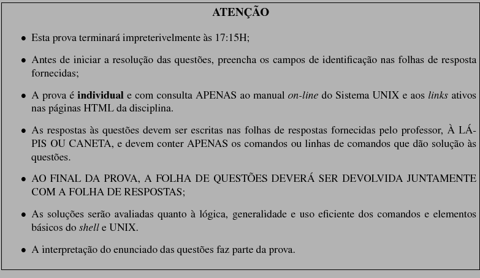

CI066 - Oficina de Programação - Turma B
2º semestre 2007
1
Submetida em 18 de outubro de 2007
Prof. Armando Luiz N. Delgado
1

Copie o diretório ~ci066/Provas/1 (incluindo toda a
sua sub-árvore) para seu diretório de login com o nome
Prova1.
Nas questões abaixo, quando não indicado explicitamente, considere o
diretório de login como o diretório corrente. Em TODAS AS
QUESTÕES, NÃO se deve mudar de diretório corrente ao se efetuar as
operações indicadas.
Ao especificar os nomes de arquivos nas linhas de comando, use uma
notação adequada (absoluta ou relativa) de forma que haja economia na
digitação da linha de comando.
(10 pontos) | - No diretório Provas/docs/cursos, localizado no
diretório de login do usuário ci066, existe o
arquivo ci218.txt. Copie este arquivo para o diretório
~/Prova1/dir2, mudando o nome no destino para
NovoCloneCI218.txt.
|
| | cp ~ci066/Provas/docs/cursos/ci218.txt Prova1/dir2/NovoCloneCI218.txt |
(10 pontos) | - Mude a permissão de acesso de arq2a (que está em
~/Prova1/dir2) de forma que todos os usuários possam
lê-lo e o proprietário possa alterá-lo. Além disso, este arquivo não
deve ser considerado como um programa executável. As demais
permissões não devem ser alteradas.
|
| | chmod a+r-x,u+w Prova1/dir2/arq2a |
(20 pontos) | - Qual o comando que muda a permissão de acesso de todos os
arquivos em sua área cujo nome possui o prefixo nor
de forma que o proprietário tenha apenas permissão de execução;
outros usuários tenham permissão de leitura apenas; usuários do grupo
possam somente ler e alterar o conteúdo de tais arquivos.
|
| | find ~ -name 'nor*' -exec chmod 164 {} ; |
(20 pontos) | - Dentre os arquivos em ~/Prova1 (e em sua
sub-árvore de diretórios), encontre aqueles cujo tamanho seja maior
que 1440000 bytes e copie cada arquivo encontrado para
~/Prova1/doc.
|
| | find Prova1 -size +1440000c -exec cp {} Prova1/doc ; |
(20 pontos) | - Considere o arquivo ~ci066/Provas/2/ci779.txt
que contém notas de uma disciplina da UFPR. Exiba os números de
matrícula e notas dos alunos que ingressaram na UFPR nos anos de
2002 e 1999.
|
| | Solução:
egrep "^GRR(1999|2002)" ~ci066/Prova2/ci779.txt | cut -d";" -f1,3
|
(20 pontos) | - Obtenha, a partir do arquivo fones.txt
localizado no diretório ~ci066/Provas/2, o
endereço postal e o 2º telefone das pessoas cujo 2º
nome seja Delgado e domínio de e-mail seja
uos.com.br.
|
| | Solução:
egrep " Delgado .*@uos.com.br$" ~ci066/Prova/2/fones.txt | \
tr "/" "\t" | cut -f2,4
|
Armando Luiz Nicolini Delgado
2007-10-19